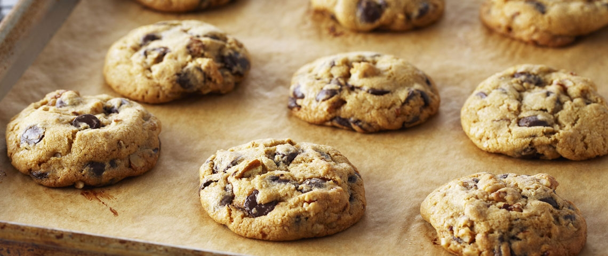

Chocolate Chip Cookies

A little taste of my childhood
The secret of this recipe is to chill the cookies before baking
Ingedients
- Unsalted butter, at room temperature - 115g
- Packed light brown sugar - 100g
- Granulated sugar - 100g
- Egg - 1
- Vanilla essence
- Flour - 185g
- Cornstarch - 7g
- Baking soda - 2.5g
- Salt - 1/2 tsp
- Chocolate chips - 240g
Steps
- Cream the butter with the brown sugar and granulated sugar together well by hand. Beat in the egg and the vanilla.
- In a separate bowl, sift the flour with the cornstarch, baking soda and salt. Add this to the butter mixture and stir until blended. Stir in the chocolate chips
- Using a small ice cream scoop or a tablespoon, scoop spoonfuls of dough (about 2 Tbsp/30 mL), shape them into a ball and place onto a parchment lined baking tray or a plate. Chill the scooped cookies for at least an hour, or once chilled, the cookies can be frozen for baking later.
- Preheat the oven to 160 °C. Arrange the chilled scooped cookies onto parchment-lined baking trays, leaving 7.5 cm between the cookies. Bake for 15-17 minutes, until browned around the edges. Cool the cookies on the baking tray. If baking cookie dough that has been frozen, arrange the frozen cookies on the baking tray and let them thaw for 20 minutes at room temperature before baking as above.